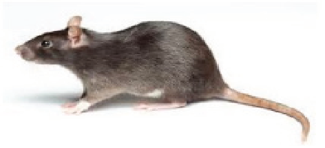

Figure 1.3 (i)
Figure 1.3: Some crop pests found on fields
Activity 1.9
1. Refer to Figure 1.3 (a) – (i) perform the following tasks:
(a) Identify each crop pest in the Figure;
(b) Explain why the above organisms in Figure 1.3 are considered pests;
(c) Identify crops and the stage of crop production at which the above pests
harm the crop; and
(d) Suggest how each of the above pests can be controlled/managed.
2. Visit your school/home farm, food stores, and some nearby crop fields;
observe and identify:
(a) pests and their effect on crops when they are in the field; and
(b) pests and their impact on crops when the produce is in storage.
3. Summarise your work in your portfolio.
Harvesting crops
Matured crops must be harvested from the field and processed for immediate
use, storage or marketing. Harvesting is the process of collecting/gathering
the entire plants or economic plant parts for economic purposes after attaining
physiological maturity. Harvesting can be for direct eating, processing, storage, or
marketing. Harvesting has to be done at the right time to ensure that the potential
maximum yield and quality of the crops is fully realised as soon as possible after
the physiological maturity stage has been reached. The physiological maturity of
a crop is also referred to as Ideal Harvesting Time (IHT).